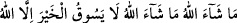
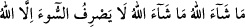
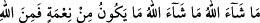
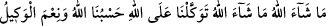

olanlar da onlardır. Denilir ki İlyas (a.s.) çöl, sahra, vâdi ve karalara, Hızır (a.s.) da
denizlere gönderilmiştir. Yine anlatılır ki onlar hacdan ayrılırken:
“Maşallah, Maşallah, hayrı ancak Allah sevk eder. Maşallah, Maşallah, kötülüğü
ancak Allah def eder. Maşallah, Maşallah, her nimet Allah’tandır. Biz Allah’a
tevekkül ettik ona güvendik. O bize kâfidir ve O ne güzel vekildir” derler.
Âbid Muhammed b. Ahmed der ki: “Mescid-i Aksâ’da ikindi namazından sonra
oturmuştum. İki adam gördüm. Birisi bizim sıfat ve şeklimizde idi. Diğeri ise büyük bir
şahıs idi. Boyu uzun, alnı, göğsü ve kolları geniş idi. O iri adam benden uzak oturdu.
Sıfatı ve boyu bizim gibi olan ihtiyar bana yaklaştı ve selâm verdi. Selâmına karşılık
verdim ve “Allah sana merhamet eylesin, sen kimsin ve bizden uzağa oturan şu adam
kim?” dedim. “Ben Hızır’ım, o da kardeşim İlyas.” dedi. Onun sözünden gönlüme korku
düştü ve titredim.
Hızır: “Korkma; biz seni seviyoruz, senin dostunuz. Neden endişe ediyorsun? Her kim
ki Cuma günü ikindi namazını edâ edip yüzünü kıble tarafına çevirir de güneş batana
kadar dâimâ “Yâ Allah, yâ Rahmân” derse izzet sâhibi olan Allah onun duâsını kabul
eder ve hâcetini ihsân eder.” dedi.
Ben: “Sen bana yakınlık gösterdin. Allah da seni zikri ile ünsiyet ettirsin.” dedim.
Ona: “Sen ne yersin?” diye sordum. “Kereviz ve yer mantarı.” dedi. “İlyas ne yer?”
diye sordum. “Her gece iftar vakti iki çörek yer.” dedi. “O nerede ikamet eder?” dedim.
“Deniz adalarında” dedi. “İkiniz ne zaman bir araya gelirsiniz?” diye sordum.
“Evliyâullahtan birisi dünyadan göçünce ikimiz de onun namazını kılarız. Arafat
mevsiminde bir araya geliriz. Haccın menâsikini tamamladıktan sonra o beni, ben de
onu traş ederim.” dedi.
“Evliyâullahın hepsini tanır mısın?” dedim. “Sayılı bir topluluğu tanırım.” dedi. Sonra
şöyle söyledi: “Rasûlullah (s.a.) dünyadan ayrılınca yeryüzü: ‘Kıyâmete kadar
üzerimde yürüyecek bir peygamber kalmadı’ diye Allah’a feryad edip inledi. Âlemlerin
Rabbi: “Ben bu ümmetten öyle erler ızhâr ederim ki onların gönülleri peygamber
gönülleri gibidir.” buyurdu.”
O vakit Hızır (a.s.) gitmek için kalktı. Ben de onunla gitmek için kalktım. Bana: “Sen
benimle beraber olmaya güç yetiremezsin. Ben her gün sabah namazını Mekke’de
Mescid-i Haram’da edâ ederim. Ardından güneş doğana kadar hıcrde Rukn-i Şâmî